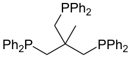

Triphos
Triphos is the name for certain organophosphorus ligands. They are air-sensitive white solids that function as tridentate ligands in coordination and organometallic chemistry.
| Names | |
|---|---|
| IUPAC name
Bis(diphenylphosphinoethyl)phenylphosphine | |
| Other names
Triphos | |
| Identifiers | |
CAS Number |
|
3D model (JSmol) |
|
| ChemSpider | |
PubChem CID |
|
InChI
| |
SMILES
| |
| Properties | |
Chemical formula |
C34H29P3 |
| Molar mass | 534.55 g/mol |
| Appearance | white crystals |
| Melting point | 129 to 130 °C (264 to 266 °F; 402 to 403 K) |
Solubility in water |
Insoluble |
Except where otherwise noted, data are given for materials in their standard state (at 25 °C [77 °F], 100 kPa). | |
| Infobox references | |
 | |
| Names | |
|---|---|
| IUPAC name
1,1,1-Tris(diphenylphosphinomethyl)ethane | |
| Other names
Triphos, tdppme, tdme | |
| Identifiers | |
CAS Number |
|
3D model (JSmol) |
|
| ChemSpider | |
PubChem CID |
|
InChI
| |
SMILES
| |
| Properties | |
Chemical formula |
C41H39P3 |
| Molar mass | 624.67 g/mol |
| Appearance | white crystals |
| Melting point | 99 to 102 °C (210 to 216 °F; 372 to 375 K) |
Solubility in water |
Insoluble |
| Hazards | |
| Safety data sheet | Triphos MSDS |
| S-phrases (outdated) | 22-24/25 |
Except where otherwise noted, data are given for materials in their standard state (at 25 °C [77 °F], 100 kPa). | |
| Infobox references | |
Bis(diphenylphosphinoethyl)phenylphosphine
Bis(diphenylphosphinoethyl)phenylphosphine is called triphos, is a linear tridentate triphosphine. It is prepared by the free-radical-catalysed addition of phenylphosphine to vinyldiphenylphosphine:[1]
- 2 Ph2PCH=CH2 + H2PPh → [Ph2PCH2CH2]2PPh
This isomer of triphos is flexible and can bind to an octahedral metal center give either a facial or meridional isomers. Some derivatives are square planar complexes of the type [MX(triphos)]+ (M = Ni, Pd, Pt; X = halide).
1,1,1-Tris(diphenylphosphinomethyl)ethane
1,1,1-Tris(diphenylphosphinomethyl)ethane is also called triphos. It is a tripodal ligand ("three-legged") of idealized C3v symmetry. It was originally prepared by the reaction of sodium diphenylphosphide and CH3C(CH2Cl)3:[2]
- 3 Ph2PNa + CH3C(CH2Cl)3 → CH3C[CH2PPh2]3 + 3 NaCl
It forms complexes with many transition metals, usually as a tripodal ligand.[3] Such complexes are used to analyze mechanistic aspects of homogeneous catalysts.[4] For example, rhodium forms complexes with CH3C[CH2PPh2]3 like [(triphos)RhCl(C2H4)], [(triphos)RhH(C2H4)], and [(triphos)Rh(C2H5)(C2H4)], provide model intermediates in the catalytic cycle for hydrogenation of alkenes.[5]
Triphos sometimes behaves as a bidentate ligand. Illustrative cases include fac-[Mn(CO)3Br(η2-triphos)] and [M(CO)4(η2-triphos)], where M is Cr, Mo, or W. Triphos serves as a tridentate-bridging ligand in an icosahedral Au13 cluster. The phosphine bridges three chlorogold(I) groups to form the tripod molecule of trichloro-1,1,1-(diphenylphosphinomethyl)ethanetrigold(I), CH3C[CH2PPh2AuCl]3.[6]
Bis(diphenylphosphinophenyl)phenylphosphine
Like bis(diphenylphosphinoethyl)phenylphosphine, bis(diphenylphosphinophenyl)phenylphosphine is a linear tridentate ligand, but it is more rigid and more air stable. It is prepared from o-lithiated triphenylphosphine:[7]
- 2 LiC6H4PPh2 + PhPCl2 → PhP[C6H4PPh2]2
References
- "Synthesis of Polytertiary Phosphines and ‘Mixed’ Phosphorus–Sulphur and ‘Mixed’ Phosphorus–Nitrogen Polydentate Ligands via Free-Radical Catalysis" Daniel L. DuBois, William H. Myers and Devon W. Meek J. Chem. Soc., Dalton Trans., 1975, 1011-1015.doi:10.1039/DT9750001011
- W. Hewertson & H. R. Watson (1962). "283. The preparation of di- and tri-tertiary phosphines". J. Chem. Soc.: 1490–1494. doi:10.1039/JR9620001490.
- Huttner, G.; Strittmatter, J.; Sandhoefner, S. (2004). "Phosphorus Tripodal Ligands". Comprehensive Coordination Chemistry II. 1. pp. 297–322. doi:10.1016/B0-08-043748-6/01082-3. ISBN 9780080437484.CS1 maint: uses authors parameter (link)
- Bianchini, Claudio; Marchi, Andrea; Marvelli, Lorenza; Peruzzini, Maurizio; Romerosa, Antonio; Rossi, Roberto (1996). "Multiple Re-C Bonds at the [{MeC(CH2PPh2)3}Re(CO)2]+ Auxiliary". Organometallics. 15: 3804. doi:10.1021/om9602264.
- Bianchini, Claudio; Meli, Andrea; Peruzzini, Maurizio; Vizza, Francesco (1990). "Tripodal Polyphosphine Ligands in Homogeneous Catalysis. 1. Hydrogenation and Hydroformylation of Alkynes and Alkenes Assisted by Organorhodium Complexes with MeC(CH2PPh2)3". Organometallics. 9: 226–240. doi:10.1021/om00115a035.
- Cooper, Mervyn K.; Henrick, Kim; McPartlin, Mary & Latten, Jozef L. (1982). "The synthesis and X-ray structure of trichloro-1,1,1-(diphenylphosphinomethyl)ethanetrigold(I)". Inorganica Chimica Acta. 65 (2): L185. doi:10.1016/S0020-1693(00)93540-0.
- Hartley, J. G., Venanzi, L. M., Goodall, D. C., "The preparation and complex-forming properties of one tritertiary and one tetratertiary phosphine", J. Chem. Soc. 1963, 3930. doi:10.1039/JR9630003930